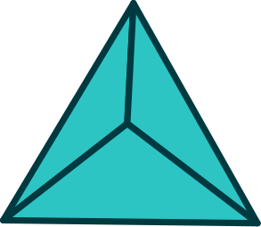
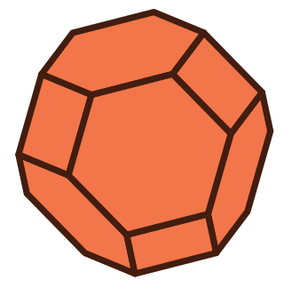
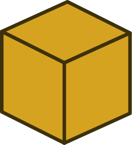

Co
mputing Buil
t
for Disco
very.
The future of high-performance computing software is here. Arkaic is building a next-generation, open platform for discovery science and engineering.
01Evolve
Don’t just optimize, Evolve.
Evolve drives long-running simulations. It compresses design cycles by an order of magnitude and removes computational barriers to discovery. Run parameter exploration and sensitivity analysis at scale. Perform model verification and validation. Build multi-fidelity surrogates and find optimal designs using Bayesian optimization. Create loops for cyclical workflows. Use agents to help craft, scale, and mend your workflows. Evolve turns computing into discovery.
02Design Databases
Accurate. Adaptable. Portable.
A design database captures how a system performs across its whole design space, and engineers use it to explore trade-offs before committing to a design. With Evolve, building one is nearly effortless. Its data structures and modules were designed from the outset with interoperability in mind. Build a pipeline once, then add runs, add a fidelity, or swap a solver. Frictionless and auditable.
- Surrogates provide fast inference throughout the design space.
- Uncertainty-aware sampling improves a surrogate with one command.
- Reports on each surrogate’s quality are generated automatically.
- Trained surrogates are portable: download one as a
.surrogate.h5file.
03Efficient Optimization
High-fidelity results. Low-fidelity bill.
Optimization using high-fidelity computational fluid dynamics (CFD) or finite-element analysis (FEA) often takes hundreds of runs and millions of core-hours. Evolve uses multi-fidelity surrogates that blend coarse-grid or reduced-order results, reducing the time-to-solution and computational cost.
- Multi-fidelity surrogates learn how your solver outputs relate.
- Handles constraints and multiple objectives.
- Batched evaluations parallelize the workflow.
- Bayesian optimization that scales to dozens of parameters.
04Cycles
New data arrives. The workflow runs again.
Some workflows are never finished: a forecast runs again with every new analysis, a digital twin recalibrates as sensors report. A cycle repeats a graph of tasks at each step in time, each from fresh initial conditions. Describe the tasks once, and Evolve runs the sequence.
- Each cycle runs the same tasks on the newest data.
- A task starts when its conditions are met: after another task, or after it fails.
- Failed tasks retry after a delay, or a backup task takes over.
- Every cycle keeps its own files and logs.
05Community
Don’t work in a vacuum. Publish the whole study.
With Evolve, your published article gets a digital companion. Publish the data, the pipeline, and the trained models all in one place. Evolve's community page showcases your work and allows community members to fork the study and run it again: check your results, extend them, or start from them. It's also great for small teams working together in private on big problems.
- Data, pipeline and trained models publish as one study.
- Anyone can fork a published study and run it again.
- A fork reads the published data in place: no download.
- Every fork and reproduction is counted on the study.
06Portable Workflows
Your work doesn’t stay in the cloud.
Run campaigns across many machines, then take the results to your workstation — or to a collaborator.
-
1
Train in the cloud
Campaigns scale across machines that start and stop as needed.
-
2
Download your results
The trained model as
.surrogate.h5. Field datasets as CGNS. -
3
Refine locally
Query the model from Python and run more trials on your own hardware.

Evolve with us.
We’re looking for researchers to try Evolve.
07Research
Optimizers that remember.
Arkaic is developing cognitive Bayesian optimization — priors built from past campaigns and applied to new ones in the same domain. For a family of airfoils, each new campaign starts from priors built on previous campaigns. Fewer high-fidelity runs on every new design.
08Team
Team
-
Brandon Gusto, PhD
Brandon is a former Navy civilian scientist at NUWC Newport and DoW SMART Scholar. He led projects in multi-fidelity Bayesian optimization and GPU-accelerated adaptive beamforming for sonar. He trained at FSU as a mechanical engineer, applied mathematician, and computational scientist, and his doctoral work advanced wavelet-based adaptive mesh refinement approaches in the context of compressible and reacting flows, as well as ML sub-grid scale modeling.
-
Toan Tran
Toan is a research software engineer building scientific tools from statistical packages to full-stack data systems. At FSU, he analyzed large-scale in-vivo neural recordings and built a computer-vision labeling pipeline to extract neural clusters of motor activity in mice. At the University of Michigan, he collaborated with Stan developers on a Bayesian data analysis package, streamlining MRP workflows with visual analytics and a domain-specific model compiler.
Curious?
inquiries@arkaic.inc